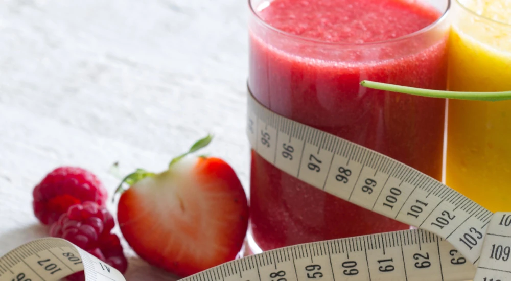

Schnell abnehmen: effektive Strategien für deine Wunschfigur

Bist du bereit, deine Wunschfigur zu erreichen, und möchtest schnell abnehmen? In diesem Beitrag entdeckst du bewährte Strategien, die nicht nur effektiv sind, sondern auch leicht in deinen Alltag integriert werden können.
Du erfährst, wie eine optimale Ernährung, regelmäßige Bewegung und die richtige Menge Wasser entscheidend für deinen Erfolg sind. Und du lernst noch einige Punkte kennen, die vielen Menschen nicht bekannt sind!
Die Grundlagen des schnellen Abnehmens
Schnell abnehmen ist ein häufiges Ziel vieler Menschen. Was man sich über Jahre angefuttert hat, soll in wenigen Wochen wieder weg. Ist das möglich? Zum Teil: Ja. Aber nicht alle Wege, die gewählt werden, sind wirklich gut und nachhaltig!
Um dieses Ziel zu erreichen, ist es wichtig, sich mit den Grundlagen des Abnehmens auseinanderzusetzen. Eine fundierte Herangehensweise umfasst verschiedene Aspekte, die miteinander verknüpft sind und sich gegenseitig unterstützen. Hierbei spielen eine ausgewogene Ernährung, regelmäßige Bewegung sowie eine ausreichende Wasseraufnahme eine entscheidende Rolle. Um schnell abnehmen zu können, müssen aber auch die Hormone in einem idealen Zustand sein, sonst läuft es nicht!
Lass uns diese Schlüsselfaktoren näher betrachten, damit du keine Fehler machst und ungünstige Strategien nutzt, die dich zwar schnell abnehmen, aber genauso schnell wieder zunehmen lassen.
Die Bedeutung einer ausgewogenen Ernährung
Eine ausgewogene und regelmäßige Ernährung ist entscheidend, um schnell und nachhaltig abzunehmen. Sie liefert dem Körper alle notwendigen Nährstoffe, die für eine optimale Funktion erforderlich sind.
Dies bedeutet, dass du dich auf eine Vielzahl von hochwertigen Lebensmitteln konzentrieren solltest, die reich an Vitaminen, Mineralien, guten Fetten und Ballaststoffen sind.
Gemüse, Salate, zuckerarmes Obst und gute Eiweißquellen sollten einen großen Teil deiner täglichen Mahlzeiten ausmachen, da sie nicht nur nährstoffreich sind, sondern auch wenig Kalorien enthalten. Zudem helfen sie dabei, das Sättigungsgefühl zu steigern und den Heißhunger auf ungesunde Snacks zu reduzieren.
Ein weiterer wichtiger Aspekt der Ernährung ist die Kontrolle der Portionsgrößen. Auch gesunde Lebensmittel können in großen Mengen zu einer erhöhten Kalorienaufnahme führen, was dem Ziel des Abnehmens entgegenwirkt.
Daher ist es ratsam, Mahlzeiten bewusst zu planen und gegebenenfalls kleinere Portionen zu wählen.
Beim Thema Ernährung werden tatsächlich die größten Fehler gemacht, wenn es um schnelles Abnehmen geht. Du musst wissen, wie deine Ernährung genau aussehen sollte, damit du zwar schnell abnimmst, aber den Körper, deinen Stoffwechsel, deine Muskulatur und dein Wohlbefinden nicht durch Nährstoffmangel gefährdest!
Für diesen Zweck sind fundierte Ernährungspläne wichtig, wie z. B. wir sie dir als unabhängige FitLine Berater anbieten. Bei unserem Programm zum Abnehmen wirst du eine Liste von Nahrungsmitteln erhalten, aus denen du vielseitig wählen kannst.
Diese Ernährung ist auf optimales und schnelles Abnehmen ausgerichtet, ohne zu Hunger, Nährstoffmängeln und den vielfältigen negativen Folgen davon zu führen.
Dies wird auch durch regelmäßige Mahlzeiten und zusätzlich die Integration von umfassenden Nahrungsergänzungsmitteln aus unserem Optimal-Set sichergestellt.
Mach bitte auf keinen Fall den Fehler, einfach nur noch sehr wenig zu essen, Mahlzeiten auszulassen oder gar nur noch Salate und Gemüsesuppen zu essen, wenn du schnell abnehmen willst!
Auch wenn du dadurch anfangs schnell Gewicht verlieren kannst, holst du dir damit andere Probleme ein, und dein Gewichtsverlust wird nicht von langer Dauer sein!
Lies dazu auch gern unseren Artikel zu den häufigsten Fehlern beim Abnehmen.
Kalorienzählen und Portionskontrolle
Kalorien und Portionskontrolle sind wichtige Aspekte einer ausgewogenen Ernährung, insbesondere wenn es um das Erreichen oder Halten eines gesunden Gewichts geht. Kalorien sind eine Maßeinheit für Energie, und unser Körper benötigt eine bestimmte Menge davon, um richtig zu funktionieren. Der Kalorienbedarf variiert je nach Alter, Geschlecht, körperlicher Aktivität und individuellen Gesundheitszielen.
Portionskontrolle bezieht sich auf das Bewusstsein über die Menge an Nahrung, die man zu sich nimmt, um zu vermeiden, dass man mehr Kalorien zu sich nimmt, als der Körper benötigt. Jedoch besteht ein großer Fehler darin zu denken, dass es allein reicht, Kalorien zu reduzieren, um optimal abzunehmen. Für einen funktionierenden und nachhaltigen Fettabbau, eine gute Figur und optimale Ernährung des Körpers ist mehr nötig.
Hier einige Tipps zur Kalorien- und Portionskontrolle:
- Kaloriendichte beachten: Manche Nahrungsmittel haben mehr Kalorien (kcal) pro Gramm als andere. Lebensmittel mit hoher Kaloriendichte (wie Fastfood oder Süßigkeiten) können schnell zu einer übermäßigen Kalorienaufnahme führen, während du von Salat niemals so viel essen kannst, um davon dick zu werden.
- Lebensmittel abwiegen: Benutze eine Küchenwaage oder Messbecher, um die Portionsgrößen genau zu bestimmen, um ein Gefühl für angemessene Portionen zu erhalten, wenn dir dies verloren gegangen ist.
- Essgewohnheiten reflektieren: Iss langsamer und achte auf das Sättigungsgefühl, um zu verhindern, dass du über deine Bedürfnisse hinaus isst. Wenn dein Sättigungsgefühl nicht mehr richtig funktioniert, musst du einige Zeit deine Ernährungsgewohnheiten bewusst kontrollieren und gezielt weniger essen, auch wenn du denkst, noch nicht satt zu sein.
- Kalorienbewusste Entscheidungen: Wählen Sie Lebensmittel, die nicht nur kalorienarm sind, sondern auch nährstoffreich, um eine ausgewogene Ernährung zu gewährleisten.
- Snacks und Mahlzeiten unterwegs planen: Bereite gesunde Snacks im Voraus vor und organisiere vorab deine Nahrungsaufnahme, wenn du unterwegs bist, um impulsives Essen aus Hunger zu vermeiden.
- Nutze Mahlzeitersatzprodukte: Shakes, die als Mahlzeitenersatz entwickelt sind, kontrollieren deine Aufnahme von kcal bei gleichzeitig abgestimmter Zufuhr von allen wichtigen Nährstoffgruppen, Vitaminen und Mineralien.
Extra-Tipp: sieh dir auch einmal unsere TopShape¹ Kapseln an.
¹Biotin trägt zu einem normalen Makronährstoffwechsel bei und Zink trägt zu einem normalen Fettsäurestoffwechsel bei.
Beispiele für Mahlzeiten zum schnellen Abnehmen
Schnelles Abnehmen erfordert eine ausgewogene Ernährung mit einem Kaloriendefizit. Hier sind einige Beispiele für Mahlzeiten, die gesund und kalorienarm sind:
Frühstück:
- Haferflocken oder Chiapudding mit Nüssen, frischen Beeren und einem Schuss Mandelmilch.
- Rührei mit Spinat und Tomaten, serviert mit einer Scheibe Vollkornbrot.
Frühstück:Mittagessen:
- Gegrilltes Hähnchenbrustfilet mit Quinoa und einer Beilage aus gedünstetem Gemüse.
- Salat aus Rucola, Kichererbsen, Avocado und Gurke mit einem leichten Dressing aus Zitronensaft und Olivenöl.
- Vollkornwrap gefüllt mit Truthahn, Salat, Tomate und Hummus.
Abendessen:
- Gebackener Lachs mit Spargel und einem kleinen Süßkartoffelbrei.
- Stir-Fry mit Tofu, Brokkoli, Paprika und Pilzen in einer leichten Sojasauce.
- Zucchini-Nudeln mit einer Tomatensauce und gegrillter Aubergine.
Snacks:
- Eine Handvoll Mandeln oder Walnüsse.
- Geschnittene Karotten oder Paprika mit Hummus.
- Ein Apfel oder eine Birne.
Die Rolle von Bewegung
Regelmäßige Bewegung unterstützt den Abbau von Fett und fördert die allgemeine Fitness. Sportliche Aktivitäten steigern den Kalorienverbrauch und tragen dazu bei, Muskelmasse aufzubauen, was wiederum den Kalorienverbrauch (Grundumsatz) erhöhen kann.
Es ist wichtig, eine Form der Bewegung zu finden, die dir Freude bereitet, sei es durch Ausdauersportarten wie Laufen oder Radfahren oder durch Krafttraining. Auch alltägliche Aktivitäten wie Spaziergänge, Tanzen oder Gartenarbeit können zur Erhöhung des Kalorienverbrauchs beitragen.
Zusätzlich kann Sport das allgemeine Wohlbefinden steigern und Stress abbauen, was oft ein Faktor für ungesundes Essverhalten ist. Indem du regelmäßig aktiv bist, schaffst du eine positive Routine für deinen Körper, aber auch für deine mentale Gesundheit, was ebenfalls sehr wichtig ist!
Bewegung und Sport spielen eine wesentliche Rolle beim schnellen Abnehmen, da sie den Kalorienverbrauch erhöht und den Stoffwechsel ankurbeln. Durch körperliche Aktivität werden Kalorien (kcal) verbrannt, was zu einem Kaloriendefizit führen kann, wenn die aufgenommene Nahrungsmenge unverändert bleibt oder reduziert wird. Dieses kcal Defizit ist entscheidend für den Abbau von Fett.
Zu den Vorteilen von Sport gehören:
- Steigerung des Energieverbrauchs: Jede Form von körperlicher Aktivität, sei es Gehen, Laufen oder Krafttraining, erhöht den Energieverbrauch des Körpers. Selbst alltägliche Bewegungen tragen dazu bei, den Kalorienumsatz zu erhöhen.
- Muskelaufbau: Krafttraining kann helfen, Muskelmasse aufzubauen. Muskeln verbrennen auch in Ruhe mehr Kalorien als Fettgewebe, was den Grundumsatz erhöht und das Abnehmen beschleunigt!
- Stoffwechselanregung: Regelmäßige Bewegung kann den Stoffwechsel dauerhaft anregen, was bedeutet, dass der Körper effizienter Kalorien (kcal) und Fett verbrennt, selbst in Ruhephasen.
- Erhalt der kardiovaskulären Gesundheit: Bewegung, insbesondere Ausdauertraining, stärkt das Herz-Kreislauf-System, was insgesamt die körperliche Fitness verbessert und indirekt das Abnehmen unterstützt.
- Verbesserung des allgemeinen Wohlbefindens: Sport fördert die Ausschüttung von Endorphinen, die das Wohlbefinden steigern. Ein besseres mentales Wohlbefinden durch Fitness kann wiederum die Motivation erhöhen, sich gesünder zu verhalten.
Um das Abnehmen effektiv zu unterstützen, empfiehlt es sich, regelmäßig eine Mischung aus Ausdauer- und Krafttraining zu betreiben.
Es ist jedoch wichtig, dass Bewegung mit einer ausgewogenen und kalorienbewussten Ernährung kombiniert wird, um die besten Ergebnisse zu erzielen. Denn die Nahrung macht tatsächlich den größten Teil aus.
Wasseraufnahme und Hydration
Eine ausreichende Wasseraufnahme ist essenziell für den Abnehmprozess, wird aber häufig stark unterschätzt!
Wasser spielt eine zentrale Rolle im Stoffwechsel und hilft dabei, Giftstoffe aus dem Körper auszuleiten. Darüber hinaus kann das Trinken von Wasser vor den Mahlzeiten dazu beitragen, das Sättigungsgefühl zu erhöhen und somit die Nahrungsaufnahme zu reduzieren.
Wasseraufnahme und Hydration sind entscheidend für Durchführung grundlegender Körperfunktionen. Wasser macht einen großen Teil unserer Körpermasse aus und spielt eine wesentliche Rolle in verschiedenen physiologischen Prozessen.
Oft wird empfohlen, mindestens zwei Liter Wasser pro Tag zu trinken (je nach Körpergewicht und Aktivität), um den Flüssigkeitsbedarf zu decken. Dies kann auch durch ungesüßte Kräutertees ergänzt werden.
Hier sind einige wichtige Punkte zur Wasseraufnahme und Hydration:
Physiologische Funktionen von Wasser:
- Wasser fungiert als Lösungs- und Transportmittel für Nährstoffe und Abfälle im Blutkreislauf.
- Es reguliert die Körpertemperatur durch Schwitzen und Atmung.
- Es dient als Reaktionspartner bei Stoffwechselvorgängen.
- Es ist Bestandteil von Zellen und Geweben und beeinflusst deren Struktur und Funktion.
- Und vieles mehr!
Aufrechterhaltung des Wasserhaushalts:
- Der Körper verliert Wasser durch Atmung, Schwitzen, Urin und Stuhlgang. Dieser Verlust muss durch die Zufuhr von Flüssigkeiten und wasserhaltigen Lebensmitteln ausgeglichen werden.
- Die empfohlene Wasseraufnahme hängt von verschiedenen Faktoren ab, einschließlich Alter, Geschlecht, Gewicht, körperlicher Aktivität, Nahrung und Umweltbedingungen.
Anzeichen von Dehydration:
- Durst, trockener Mund und trockene Haut.
- Verminderte Urinproduktion oder dunkler Urin.
- Müdigkeit, Schwindel, Verwirrtheit oder Konzentrationsprobleme.
- Kopfschmerzen.
- In schweren Fällen kann Dehydration zu Hitzeerschöpfung oder Hitzschlag führen.
Tipps zur Förderung der Hydration:
- Trinke regelmäßig über den Tag kleinere Mengen Wasser, auch wenn du erstmal keinen Durst hast. Ein normales Durstgefühl kann so wiederhergestellt und „gelernt“ werden.
- Bevorzuge stilles Wasser und ungesüßte Getränke anstelle von zuckerhaltigen oder alkoholhaltigen Getränken und Wasser mit Kohlensäure.
- Iss wasserreiche Lebensmittel wie Obst und Gemüse.
- Achte auf ausreichende Flüssigkeitszufuhr vor, während und nach sportlichen Aktivitäten.
- Nimm immer, wenn du unterwegs bist, eine kleine Flasche stilles Wasser mit.
Überhydration:
- Obwohl ausreichend Wasseraufnahmen wichtig sind, kann eine übermäßige Wasseraufnahme zu einer Wasservergiftung oder Hyponatriämie führen, einem Zustand, bei dem der Natriumspiegel im Blut zu stark abfällt und bis zum Tod führen kann. Das bedeutet, dass du nicht in kurzer Zeit viele Liter Wasser trinken darfst! Es geht stattdessen um eine regelmäßige und moderate Zufuhr von Wasser (1 Glas pro Stunde als pauschaler Richtwert), denn diese ist für deinen Stoffwechsel optimal.
Effektive Methoden zum schnellen Abnehmen
Es gibt verschiedene Methoden, die dir helfen können, schnell abzunehmen. Die folgenden Strategien sind nicht nur effektiv, sondern lassen sich auch gut in den Alltag integrieren.
In den folgenden Abschnitten werden wir uns eingehend mit zwei besonders bewährten Ansätzen befassen: Intervallfasten und Low-Carb-Diäten. Beide Methoden bieten einzigartige Vorteile und können dir helfen, deine Ziele zur Gewichtsreduktion schneller zu erreichen.
Intervallfasten
Intervallfasten hat sich als effektive Methode erwiesen, um Gewicht zu verlieren. Diese Methode basiert auf einem Wechsel zwischen Essens- und Fastenperioden, was dazu beiträgt, die Kalorienaufnahme zu reduzieren und den Stoffwechsel anzukurbeln.
Es gibt verschiedene Formen des Intervallfastens, wie beispielsweise das 16/8-Modell, bei dem du 16 Stunden fastest und innerhalb eines Zeitfensters von 8 Stunden isst. Viele Menschen finden es einfacher, ihre Nahrungsaufnahme auf einen bestimmten Zeitraum zu konzentrieren, anstatt ständig über das Essen nachzudenken.
Ein wesentlicher Vorteil des Intervallfastens ist die Möglichkeit, die Insulinempfindlichkeit zu verbessern. Niedrige Insulinspiegel fördern die Fettverbrennung und können dazu führen, dass der Körper effizienter auf gespeicherte Energiereserven zugreift.
Dies kann besonders vorteilhaft sein, wenn du schnell abnehmen möchtest.
Darüber hinaus berichten viele Menschen von einem gesteigerten Energieniveau während der Fastenperioden, was ihnen hilft, aktiver zu sein und mehr Bewegung in ihren Alltag zu integrieren.
Es ist wichtig zu betonen, dass Intervallfasten nicht für jeden geeignet ist. Personen mit bestimmten gesundheitlichen Bedingungen sollten vor Beginn dieser Methode Rücksprache mit einem Arzt halten. Dennoch kann diese Strategie eine hervorragende Möglichkeit sein, um Gewicht zu verlieren.
Zu den bekanntesten Protokollen des Intervallfastens gehören:
- 16/8-Methode: Hierbei fastet man täglich 16 Stunden und konzentriert die Nahrungsaufnahme auf ein 8-stündiges Fenster. Beispielsweise könnte man zwischen 10 Uhr und 18 Uhr essen und dann bis zum nächsten Tag um 10 Uhr fasten. Dies entlastet auch die Verdauungsorgane über die Nacht und hat sich als äußerst gesundheitsförderlich erwiesen.
- 5:2-Diät: An fünf Tagen der Woche kannst du normal essen. Aber an 2 nicht zusammenhängenden Tagen reduzierst du die Kalorien auf etwa 500 bis 600.
- Eat-Stop-Eat: Du kannst 1x bis 2x in der Woche für 24 Stunden fasten. Zum Beispiel von einem Abendessen bis zum nächsten Abendessen am folgenden Tag.
- Alternierendes Fasten: Es wird jeden zweiten Tag Energie reduziert aufgenommen, entweder durch völliges Fasten oder durch erheblich verminderte Kalorienaufnahme.
Achtung: Fastentage solltest du nicht einfach so machen, nicht für jeden Menschen ist das geeignet!
Die Vorteile des Intervallfastens umfassen potenziell eine Gewichtsabnahme, eine verbesserte Stoffwechselgesundheit, sowie positive Auswirkungen auf Blutzucker, Entzündungsmarker und Herzgesundheit. Einige Studien deuten darauf hin, dass intermittierendes Fasten auch die Zellreparaturprozesse und die Langlebigkeit beeinflussen könnte.
Es ist jedoch zu beachten, dass nicht jeder gleichermaßen auf die Fastenmethode anspricht, und es ist ratsam, vor Beginn des Intervallfastens einen Arzt zu konsultieren, besonders wenn Vorerkrankungen bestehen.
Low-Carb-Diäten
Low-Carb-Diäten können den Körper dazu bringen, Fett effizienter zu verbrennen. Bei dieser Ernährungsform wird die Aufnahme von Kohlenhydraten stark reduziert, während der Fokus auf Proteinen und gesunden Fetten liegt.
Dies führt dazu, dass der Körper in einen Zustand der Ketose übergeht, in dem er Fett anstelle von Kohlenhydraten als Hauptenergiequelle nutzt. Viele Menschen berichten von schnellen Gewichtsverlusten und einer verbesserten Körperzusammensetzung durch diese Diätform.
Eine typische Low-Carb-Diät beinhaltet den Verzehr von Lebensmitteln wie magerem Fleisch, Fisch, Eiern, Nüssen, Samen sowie Gemüse mit niedrigem Kohlenhydratanteil. Diese Lebensmittel sind nicht nur nährstoffreich, sondern auch sättigend, wodurch Hunger und Heißhungerattacken reduziert werden, dadurch bleibst du auch länger satt und konsumierst insgesamt weniger Kalorien.
Es ist jedoch wichtig, eine ausgewogene Herangehensweise zu wählen und sicherzustellen, dass du alle notwendigen Nährstoffe erhältst.
Ergänzungen zur Nährstoffoptimierung können hierbei hilfreich sein, um sicherzustellen, dass dein Körper alle Vitamine und Mineralien erhält, die er benötigt. Die Kombination aus einer Low-Carb-Diät und gezielten Nahrungsergänzungsmitteln ist äußerst empfehlenswert!
Hier sind einige grundlegende Aspekte und Überlegungen zu Low-Carb-Diäten:
- Reduzierte Kohlenhydrataufnahme: Der Konsum von kohlenhydratreichen Nahrungsmitteln wie Brot, Reis, Pasta, zuckerhaltigen Produkten wie auch süßes Obst wird vermindert.
- Erhöhte Eiweiß- und Fettzufuhr: Als Energiequellen werden vermehrt Proteine und Fette genutzt. Lebensmittel wie Fleisch, Fisch, Eier, Käse, gute Öle und Nüsse sind zentrale Bestandteile.
- Wichtig für die Aufnahme von Mineralien und Vitaminen sind ergänzend hochwertige Gemüse, Salate sowie zuckerarme Obstsorten in kleineren Mengen.
- Auswirkungen auf Stoffwechsel und den Insulinspiegel: Eine geringere Kohlenhydratzufuhr kann dazu führen, dass der Insulinspiegel im Blut sinkt, was theoretisch den Fettabbau begünstigen kann. Der Körper nutzt/bildet sogenannte Ketonkörper zur Energieversorgung der Zellen, wenn Kohlenhydrate fehlen. Dies hat unterschiedlichste, vorteilhafte Auswirkungen.
Mögliche Vorteile:
- Gewichtsverlust: Die meisten Menschen berichten von einer effektiven Gewichtsabnahme ohne Muskelabbau und Hungern, insbesondere in der Anfangsphase. Besonders wichtig und hilfreich ist dieser Ernährungsform, wenn hartnäckiges Bauchfett reduziert werden soll.
- Verbesserte Blutzuckerkontrolle: Kann bei Menschen mit Insulinresistenz oder Typ-2-Diabetes die Blutzuckerwerte stabilisieren.
- Verringerung des Appetits: Viele Menschen berichten, dass eine höhere Proteinzufuhr das Sättigungsgefühl, aber auch das Wohlbefinden und die Energie verbessert (größere Mengen an Kohlenhydraten machen uns oft müde.)
Mögliche Nachteile:
- Langfristige Nachhaltigkeit: Der strikte Verzicht auf kohlenhydratreiche Lebensmittel ist schwer dauerhaft aufrechtzuerhalten. Dies ist aber auch nicht das Ziel. Im Fokus sollte stehen, dass du nach erfolgreichem Gewichtsverlust auf eine ausgewogene Ernährung übergehst, die eine erneute Gewichtszunahme ausschließt.
- Mangelernährung: Eine unausgewogene Low-Carb-Diät könnte zu einem Mangel an Ballaststoffen und bestimmten Vitaminen und Mineralstoffen führen, wenn du sie zu lange durchführst.
- „Keto-Grippe“: Bei sehr niedriger Kohlenhydratzufuhr können anfängliche Symptome wie Schwäche, Kopfschmerzen und Reizbarkeit auftreten. Dies ist aber in der Regel nach 2 bis 3 Tagen vorbei, sofern sich dein Stoffwechsel korrekt umstellt.
Varianten der Low-Carb-Diät:
- Ketogene Diät: Sehr niedrige Kohlenhydratzufuhr, hoher Fettanteil; zielt darauf ab, den Körper in einen Zustand der Ketose zu versetzen.
- Atkins-Diät: Beginnt mit einer sehr kohlenhydratarmen Phase und führt schrittweise mehr Kohlenhydrate ein.
- Paleo-Diät: Konzentriert sich auf unverarbeitete Lebensmittel und schließt raffinierte Kohlenhydrate und Zucker aus.
Schlussfolgerung:
Low-Carb-Diäten können eine effektive Methode zur Gewichtsabnahme und Verbesserung der Stoffwechselgesundheit sein, jedoch ist es wichtig, sie ausgewogen zu gestalten und sich der möglichen Nachteile bewusst zu sein.
Zusammenfassend lässt sich sagen, dass sowohl Intervallfasten als auch Low-Carb-Diäten effektive Methoden sind, um schnell abzunehmen, wenn du sie mit ausreichend Bewegung kombinierst und die Hormone in der Balance sind.
Beide Ansätze bieten unterschiedliche Vorteile und können je nach individuellen Vorlieben und Lebensstil angepasst werden.
Eine optimale Nährstoffaufnahme beachten
Wenn du abnehmen möchtest, ist es wichtig, nicht nur auf die Kalorien zu achten, sondern auch sicherzustellen, dass dein Körper alle notwendigen Vitamine und Mineralien erhält, um effizient zu funktionieren!
Viele Menschen unterliegen immer noch dem Irrglauben, dass es ausreicht, einfach nur sehr wenig zu essen, wenn sie schnell abnehmen wollen. Jedoch ist dein Körper auf viele, sogenannte essentielle Nährstoffe angewiesen, und diese sollten bei einer reduzierten Ernährung umso mehr im Fokus stehen, damit es daran nicht mangelt.
Wenn du darauf achtest, dass du alle essentiellen Nährstoffe täglich ausreichend aufnimmst, machst du alles richtig. Essentiell sind diese Nährstoffe, die dein Körper nicht selbst bilden kann, die aber lebensnotwendig sind.
Das sind: die meisten Vitamine, sämtliche Mineralien und Spurenelemente, essentielle Fettsäuren (speziell Omega 3) und essentielle Aminosäuren.
Hier sind einige Beispiele von Mikronährstoffen, die wichtig sein können:
- B-Vitamine: B-Vitamine wie B1 (Thiamin), B2 (Riboflavin), B3 (Niacin), B5 (Pantothensäure), B6 (Pyridoxin), B7 (Biotin) und B12 (Cobalamin), sind für den Energiestoffwechsel notwendig und für die Umwandlung von Nahrung in Energie.
(Thiamin, Riboflavin, Biotin, Niacin, Vitamin B12 und Pantothensäure tragen zu einem normalen Energiestoffwechsel bei. Biotin trägt zu einem normalen Stoffwechsel von Makronährstoffen bei. Vitamin B6 trägt zu einem normalen Eiweiß- und Glycogenstoffwechsel bei.) - Mineralien wie Kalzium: Calcium trägt zur normalen Funktion von Verdauungsenzymen bei.
- Spurenelemente wie Zink und Chrom für den Stoffwechsel: Zink trägt zu einem normalen Kohlenhydrat-Stoffwechsel bei. Zink trägt zu einem normalen Stoffwechsel von Makronährstoffen bei. Zink trägt zu einem normalen Fettsäurestoffwechsel bei. Chrom trägt zu einem normalen Stoffwechsel von Makronährstoffen bei. Chrom trägt zur Aufrechterhaltung eines normalen Blutzuckerspiegels bei.
Für die Optimierung deiner täglichen Nährstoffaufnahme kannst du natürlich auch gute Nahrungsergänzungsmittel verwenden. Sie ersetzen aber nie eine frische und ausgewogene Ernährung.
So liefert unser Acti z. B. die gesamten B-Vitamine, während das Resto alle wichtigen Mineralien und Spurenelemente in einem leckeren Getränk beinhaltet.
Ein Mahlzeitenersatz Shake kann hilfreich sein, wenn es im Alltag einmal besonders schnell und unkompliziert gehen soll. Er bietet eine ausgewogene Kombination aus Proteinen, Kohlenhydraten und Fetten sowie wichtigen Vitaminen und Mineralien speziell zum Abnehmen*. Durch den Verzehr solcher Produkte kannst du sicherstellen, dass du genügend Nährstoffe zu dir nimmst, während du gleichzeitig deine Kalorienaufnahme kontrollierst.
*Das Ersetzen von zwei der täglichen Hauptmahlzeiten im Rahmen einer kalorienarmen Ernährung durch einen solchen Mahlzeitersatz trägt zu Gewichtsabnahme bei.
Faktoren, die die Gewichtsabnahme beeinflussen können
Die Gewichtsabnahme kann von einer Vielzahl an Faktoren beeinflusst werden. Diese bestimmen, ob du schnell abnehmen kannst, oder es vielleicht nicht ganz so gut klappt. Hier sind die wichtigsten im Überblick:
- Ernährung: Eine ausgewogene Ernährung mit einem Kaloriendefizit führt zur Gewichtsabnahme. Der Konsum von ballaststoffreichen Lebensmitteln, Proteinen und gesunden Fetten kann den Abnehmprozess unterstützen.
- Körperliche Aktivität: Regelmäßige Bewegung verbrennt Kalorien und kann den Stoffwechsel ankurbeln. Eine Kombination aus Krafttraining und Ausdauertraining ist oft effektiv.
- Wasseraufnahme: Eine ausreichende Wasserzufuhr optimiert den Stoffwechsel und kann das Hungergefühl reduzieren.
- Stoffwechsel: Der individuelle Stoffwechsel spielt eine wesentliche Rolle. Manche Menschen haben von Natur aus einen schnelleren Stoffwechsel, was ihnen erleichtert, Gewicht zu verlieren.
- Genetik: Genetische Faktoren können ebenfalls beeinflussen, wie einfach oder schwierig es für eine Person ist, abzunehmen.
- Schlaf: Ausreichender und erholsamer Schlaf ist wichtig, da Schlafmangel hormonelle Ungleichgewichte verursachen kann, die den Hunger, das Sättigungsgefühl und den Fettabbau beeinflussen.
- Stress: Stress kann das Hormon Cortisol erhöhen, was den Appetit steigern und zu einer Gewichtszunahme führen kann. Stresshormone blockieren außerdem den Fettabbau. Stressmanagement-Techniken wie Meditation oder Yoga können da hilfreich sein.
- Weitere hormonelle Faktoren: Hormone wie Insulin, Leptin und Ghrelin beeinflussen Appetit und Gewicht. Ungleichgewichte können Gewichtsveränderungen behindern.
- Soziale und psychologische Faktoren: Die Unterstützung durch Freunde und Familie sowie psychische Verfassung können den Abnehmprozess beeinflussen.
- Medizinische Bedingungen: Bestimmte gesundheitliche Zustände, wie Schilddrüsenerkrankungen oder Polyzystisches Ovarialsyndrom (PCOS), sowie die Einnahme von bestimmten Medikamenten können die Gewichtsabnahme erschweren oder ganz verhindern.
Psychologische Aspekte des Abnehmens
Der psychologische Aspekt des Abnehmens wird oft unterschätzt, ist aber entscheidend für den Erfolg. Die innere Einstellung und die mentale Stärke spielen eine zentrale Rolle, wenn es darum geht, schnell abzunehmen und die gesetzten Ziele langfristig zu erreichen.
Es ist wichtig, sich bewusst zu machen, dass Gewichtsreduktion nicht nur eine physische Herausforderung darstellt, sondern auch eine mentale Reise ist, die Disziplin, Geduld und eine positive Einstellung erfordert.
Stressbewältigungstechniken wie Meditation, Yoga oder Atemübungen können helfen, den Druck abzubauen und ein besseres Gleichgewicht zwischen Körper und Geist zu finden. Indem du regelmäßig Zeit für solche Aktivitäten einplanst, schaffst du nicht nur Momente der Entspannung, sondern förderst auch die Achtsamkeit in deinem Alltag.
Motivation und Zielsetzung
Klare Ziele und eine starke Motivation sind unerlässlich für deinen Abnehmerfolg. Ohne eine klare Vorstellung davon, was du erreichen möchtest, kann es leicht passieren, dass du den Fokus verlierst. Setze dir spezifische, messbare und realistische Ziele, die dich motivieren.
Anstatt einfach nur zu sagen: „Ich will Gewicht verlieren“, formuliere dein Ziel genau, zum Beispiel: „Ich möchte in den nächsten 6 Monaten 10 Kilo abnehmen.“ Solche konkreten Ziele helfen dir nicht nur dabei, deinen Fortschritt zu verfolgen, sondern geben dir auch einen klaren Handlungsrahmen.
Zusätzlich ist es hilfreich, deine Motivation zu identifizieren.
Frag dich: Warum möchtest du abnehmen? Welche Vorteile erhoffst du dir? Kommt deine Motivation aus dir selbst, oder wird sie von außen gesteuert?
Visualisiere deine Erfolge und stell dir vor, wie dein Leben aussehen wird, wenn du deine Ziele erreicht hast. Diese positive Vorstellung kann dir helfen, auch in schwierigen Zeiten durchzuhalten.
Herausforderungen beim schnellen Abnehmen
In diesem Abschnitt werden wir uns mit den Herausforderungen beim schnellen Abnehmen auseinandersetzen und wie man diesen erfolgreich begegnen kann.
Unrealistische Erwartungen für schnelles Abnehmen
Ein nicht unwesentlicher Aspekt ist der Druck von außen. Oft setzen sich Menschen unrealistische Ziele oder vergleichen sich mit anderen. Dies kann zu Frustration und Entmutigung führen. Wenn du die verschiedenen Faktoren weiter oben berücksichtigst, wird dir schnell klar werden, dass die Geschwindigkeit sehr unterschiedlich sein kann, und dass du dich nie mit anderen vergleichen solltest.
Wie schnell du abnehmen kannst, hängst auch massiv von deinem Ausgangsgewicht ab. Frustration durch falsche Erwartungen erleben wir in unserer Arbeit als unabhängige Partner der PM-International / FitLine Produkte tatsächlich häufiger:
Die Freundin hat z. B. 10 kg in 4 Wochen abgenommen (weil sie mit 130 kg gestartet ist), und wenn es bei einem selbst nur 5 kg sind, weil man deutlich leichter ist, ist man dann frustriert. Das ist schade und unnötig!
Setze dir also bitte realistische Ziele und feiere kleine Erfolge auf deinem Weg zur Wunschfigur. In unseren Beratungsgesprächen geben wir dir gern eine Einschätzung, welche Gewichtsreduktion in deiner persönlichen Situation in welchen Zeiträumen realistisch ist. Nutze dazu bitte direkt unsere kostenlose Abnehmberatung.
Mach dir deine Fortschritte immer bewusst und belohne dich für erreichte Zwischenziele!
Geduld lehrt uns, realistische Erwartungen zu haben und uns auf den Prozess des Wandels einzulassen, anstatt uns einzig auf das Endziel zu konzentrieren. Eine langfristige Gewichtsreduktion erfordert Zeit und kontinuierlichen Einsatz. Schnelle Ergebnisse können zwar motivierend sein, bringen jedoch oft den Druck mit sich, der uns in die Irre führen kann.
Schließlich willst du dein neues Gewicht ja auch halten, oder? Dazu ist es nötig, neue Routinen im Alltag wirklich gefestigt zu haben, und nicht nur schnell abzunehmen!
Umgang mit Rückschlägen
Es ist wichtig zu erkennen, dass Rückschläge während des Abnehmprozesses normal sind. Es kann Tage geben, an denen die Waage nicht das gewünschte Ergebnis zeigt oder der Heißhunger überhandnimmt.
Statt sich von solchen Rückschlägen entmutigen zu lassen, solltest du lernen, damit umzugehen. Sie sollten als Teil des Prozesses angesehen werden, um daraus zu lernen und deine Strategien gegebenenfalls anzupassen.
Analysiere die Situationen, in denen du Schwierigkeiten hast, und überlege dir Strategien zur Verbesserung. Versuche, die Auslöser für ungesunde Gewohnheiten zu identifizieren. Dann kannst du dir überlegen, wie du in Zukunft anders damit umgehen kannst.
Vielleicht hilft es dir, einen Essensplan zu erstellen oder regelmäßig kleine Belohnungen für erreichte Zwischenziele einzuplanen.
Ersetze negative Gedanken durch ermutigende Botschaften. Sage dir: „Ich mache Fortschritte“ oder „Ich bin auf dem richtigen Weg“. Solche Affirmationen stärken dein Selbstbewusstsein fördern eine positive Einstellung gegenüber dem Abnehmen.
Eine positive Einstellung und das Feiern auch kleiner Erfolge kann dir helfen, motiviert zu bleiben und deine Reise durchgehend wertzuschätzen. Um das Erreichte festzuhalten und sich weiterhin zu motivieren, könnte ein persönliches Journal über deine Fortschritte hilfreich sein: Notiere nicht nur das Gewicht, sondern auch Gedanken über deine Gefühle, Herausforderungen und Erfolge. Diese Reflexion schafft ein tieferes Verständnis für den eigenen Prozess und kann als wertvolle Quelle der Motivation dienen.
Neue Routinen etablieren
Die bewusste Integration von neuen Gewohnheiten ist wichtig, um dein Ziel langfristig zu halten, die Motivation aufrechtzuerhalten und ein neues Lebensgefühl zu entwickeln.
Setze Veränderungen schrittweise um und versuche nicht alles auf einmal. „Zu viel“ und „zu schnell“ überfordert häufig und führt dazu, dass du dein Ziel gar nicht erreichst und frustriert aufgibst.
Routine gibt Struktur und hilft dabei, dein Verhalten langfristig zu automatisieren. Dann wird es wirklich einfach, den Rest deines Lebens schlank zu bleiben!
Beginne den Tag beispielsweise mit einem nährstoffreichen Frühstück, das dir die notwendige Energie für den Tag liefert und Heißhungerattacken im Laufe des Tages vorbeugt. Plane auch regelmäßige Essenszeiten ein, um deinen Stoffwechsel aktiv zu halten und Überessen zu vermeiden.
Dafür kann es nötig sein, dich anders zu organisieren: anders einzukaufen, vorauszudenken und unkomplizierte Mahlzeiten unterwegs dabei zu haben.
Und wenn es für den Übergang leichter sein soll, kannst du auch einen ProShape Shake als Mahlzeitersatz nutzen.
Nimm dir Zeit für deine Mahlzeiten, iss langsam und schätze jeden Bissen. Das kann deine Zufriedenheit steigern und dir helfen, ein besseres Gefühl für Hunger und Sättigung zu entwickeln.
Du kannst auch einen wöchentlichen Trainingsplan aufstellen: Setze dir feste Zeiten für sportliche Aktivitäten, sodass Bewegung ein fester Bestandteil deines Alltags wird. Variiere deine Workouts, um Langeweile zu vermeiden und verschiedene Muskelgruppen anzusprechen. Nutze die Gelegenheit, neue Sportarten auszuprobieren oder dich mit Freundinnen und Freunden zu gemeinsamen Aktivitäten zu verabreden. Das steigert nicht nur den Spaßfaktor, sondern auch die Verbindlichkeit.
Unterstützung und Selbstreflexion
Die Unterstützung von Familie und Freunden kann einen enormen Unterschied machen!
Teile deine Ziele mit Menschen in deinem Umfeld und bitte um deren Unterstützung. Ob es darum geht, gemeinsam Sport treiben oder gesunde Rezepte auszutauschen, denn ein starkes Unterstützungsnetzwerk kann deine Motivation erheblich steigern.
Wenn du sowohl persönliche Beziehungen als auch professionelle Unterstützung in Anspruch nimmst, erhöhst du deine Chancen auf langfristigen Erfolg erheblich und machst den Weg zur Gewichtsreduktion zu einer bereichernden Erfahrung, die über die bloßen Zahlen auf der Waage hinausgeht. Darum ist es uns wichtig, dass wir dich persönlich bei deinem Abnehmprogramm begleiten. Nutze bitte unsere kostenlose Unterstützung, dann wirst du die besten Ergebnisse haben!
Nimm dir regelmäßig Zeit, um über deine Fortschritte nachzudenken und deine Strategien anzupassen. Was funktioniert gut? Wo gibt es noch Verbesserungsbedarf? Diese Reflexion hilft dir dabei, dich kontinuierlich weiterzuentwickeln und deine Ziele immer wieder neu auszurichten.
Gelüste und Essen aus emotionalen Gründen
Der Verzicht auf bestimmte Lebensmittel kann Verlangen und Frustration hervorrufen. Statt dem nachzugehen, kann es hilfreich sein, sich auf Vielfalt und Genuss zu konzentrieren. Experimentiere mit neuen Rezepten und Nahrungsmitteln und gestalte deine Mahlzeiten abwechslungsreich!
Suche dir einen guten Ersatz für Genussmittel, der den Fettabbau nicht blockiert. Es gibt tausende Möglichkeiten für Süßes, Schokolade, Kuchen, Eis und Snacks ohne dickmachende Zutaten!
Iss regelmäßig ausreichend von den richtigen Nahrungsmitteln. Dies ist das A und O für einen satten und zufriedenen Tag.
Lerne, bewusst auf deinen Körper zu hören und seine Bedürfnisse wahrzunehmen. Achte darauf, wie bestimmte Nahrungsmittel auf deinen Körper wirken und welche Emotionen mit dem Essen verbunden sind. Oft essen wir aus Gewohnheit oder aus emotionalen Gründen anstatt aus echtem Hunger.
Schaffe dir eine Umgebung, die dich unterstützt: entferne ungesunde Snacks aus deinem Zuhause und umgib dich stattdessen mit gesunden Alternativen.
Häufige Fragen zum schnellen Fettabbau
Wie und ob du 5 Kilo in 2 Wochen Gewicht verlieren kannst, hängt von deiner Ausgangssituation ab und kann nicht pauschal beantwortet werden.
Menschen mit einem sehr hohen Gewicht und vielen Wassereinlagerungen verlieren z. B. locker mal einige Kilos in wenigen Tagen Wasser, wenn die Ernährung und Nährstoffzufuhr entsprechend umgestellt wird. Dies ist dann aber kein Fettabbau. Wiegst du demgegenüber verhältnismäßig wenig, kann es auf gesundem und nachhaltigem Weg eventuell nur schwer möglich sein, 5 kg in 2 Wochen Fett abzubauen.
Um besonders schnell Fett abzubauen, musst du deinen Kalorienzufuhr drastisch reduzieren, gleichzeitig deine körperliche Aktivität erhöhen und Muskelaufbau fördern. Eine Kombination aus regelmäßigem Training, dem Verzehr von nährstoffreichen Lebensmitteln mit viel hochwertigen Proteinquellen und so wenig wie möglich Kohlenhydraten, kann dabei helfen, so schnell wie möglich abzunehmen.
Die schnellste Art abzunehmen, ohne einen Jojo-Effekt zu riskieren, besteht darin, eine kalorienreduzierte Diät mit viel Eiweiß, sehr wenig Kohlenhydraten und viel Sport zu kombinieren, welcher die Muskulatur aufbaut. Um das Risiko für Nährstoffmängel zu reduzieren und deinen Körper optimal zu versorgen, solltest du hochwertige Nahrungsergänzungsmittel dazu kombinieren. Achte streng darauf, regelmäßig zu essen und den Körper nicht auszuhungern.
Gesund abzunehmen bedeutet in der Regel, dass man zwischen 0,5 und 1 Kilogramm pro Woche verliert. Diesem Maßstab folgend, kann eine langsame und stetige Gewichtsreduktion durch eine Kombination aus gesunder Ernährung und regelmäßiger körperlicher Aktivität erreicht werden. Schnellere Gewichtsabnahme kann gesundheitliche Risiken mit sich bringen und ist oft nicht nachhaltig. Es kommt aber darauf an, wie hoch dein Ausgangsgewicht und deine allgemeine Situation ist, um das beurteilen zu können.
Es ist wichtig zu beachten, dass schnelles Abnehmen nicht immer die gesündeste oder nachhaltigste Option ist. Eine ausgewogene und langfristige Diät in Kombination mit regelmäßigem Sport und Fitness ist meistens effektiver und gesünder. Wenn du jedoch vorhast, schnell abzunehmen, solltest du dich an eine Diät halten, die kurzfristig sehr kalorienarm ist und dabei den Körper aber mit den notwendigen Nährstoffen versorgt.
Eine bekannte Methode ist die kalorienarme, proteinreiche Diät. Diese beinhaltet:
- Kalorienreduktion: Reduziere deine Kalorienzufuhr, um ein Kaloriendefizit zu erreichen. Berechne deinen täglichen Kalorienbedarf und reduziere ihn um etwa 500 bis 1000 Kalorien (kcal).
- Proteinreiche Ernährung: Erhöhe die Aufnahme von magerem Eiweiß (z.B. Huhn, Fisch, Tofu, Bohnen), da Protein satt macht und dabei hilft, Muskelmasse während der Gewichtsreduktion zu erhalten.
- Viel Gemüse und zuckerarmes Obst: Diese Lebensmittel sind nährstoffreich, kalorienarm und enthalten Ballaststoffe, die das Sättigungsgefühl fördern.
- Vermeidung von Zucker und raffinierten Kohlenhydraten: Zuckerhaltige Getränke, Backwaren, gewöhnliche Süßigkeiten und weiße Teigwaren jeder Art sollten vermieden werden.
- Viel Wasser trinken: Ausreichend Wasser regt den Stoffwechsel an und kann beim Abnehmen helfen.
- Regelmäßige körperliche Aktivität: Kombiniere die Diät mit regelmäßigem Training, um Kalorien zu verbrennen und die Fitness zu verbessern.
Denk daran, solche radikalen Diäten sollten nur für kurze Zeit durchgeführt werden. Langfristige Änderungen in der Ernährungs- und Lebensweise sind der Schlüssel zu einem gesunden und nachhaltigen Gewichtsverlust.